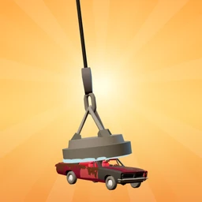
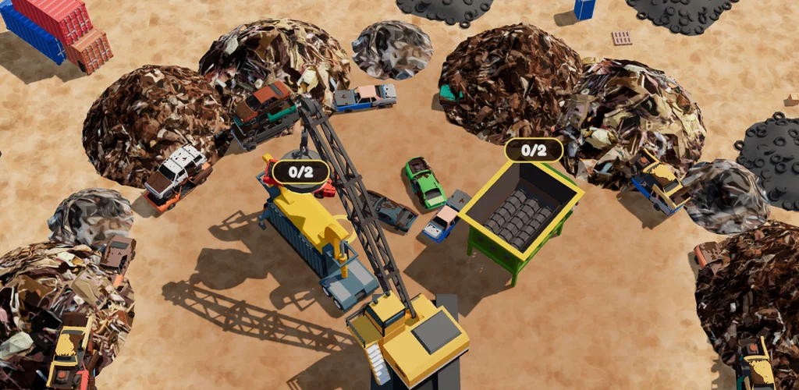
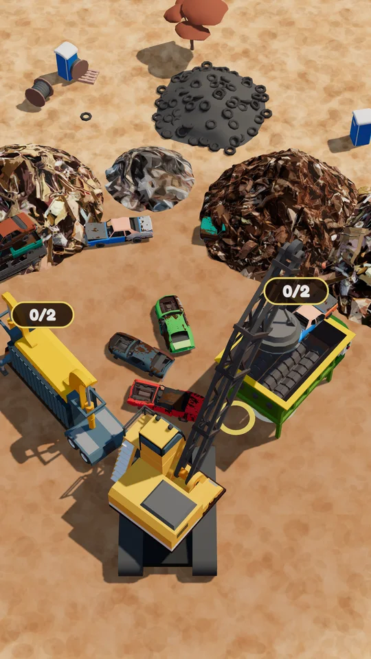
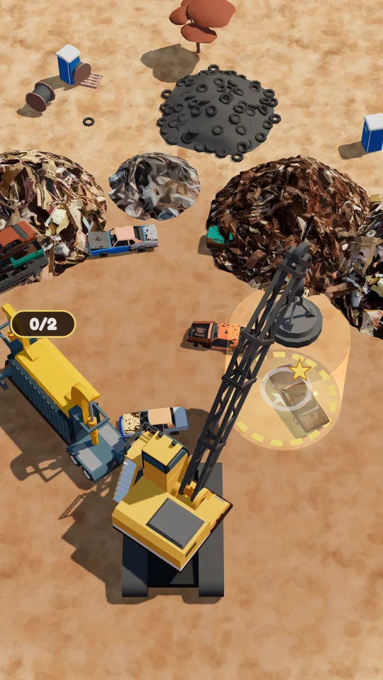
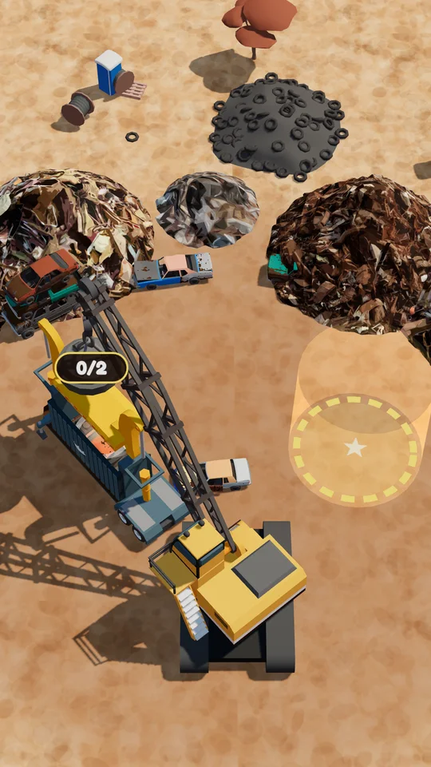
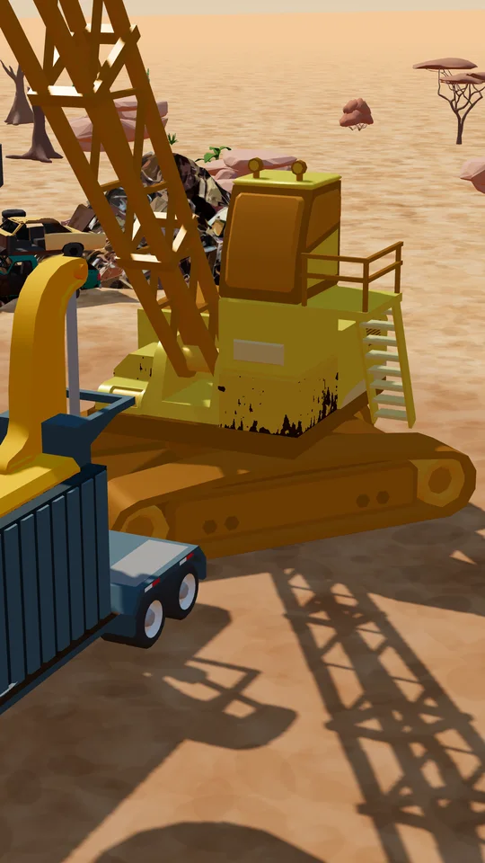

Swing the magnet. Crush the wrecks. Save the classics.
You run the big magnet crane in a dusty desert junkyard. Grab rusty wrecks, swing them over the yard and drop them into the car press or the shredder for that satisfying crunch. But look out for the gold star: somewhere in every pile there might be a rare classic. Set it down gently on the restoration pad and watch it roll out with a fresh coat of paint. Crush it, and the collectors will never forgive you.





Dusty Yard, Crusher Row, On the Move, Scrap King, Night Shift and Container Port: stacked wrecks, clutter, dust storms, far corners only a driving crane can reach, night work under the magnet light, an old school bus and narrow slots between shipping containers.
The load hangs on a cable and swings with every move. Upgrades make the crane turn faster, swing less and lift quicker.
Slam cars flat in the car press, feed them into the shredder, or give a rusty classic its shine back.
Spend coins on four crane upgrades and twelve paint jobs, from Fire Engine red to the glowing Neon Night and Molten Lava.
The first level and the first driving level guide you step by step, with the next move always on screen.
No account needed. Your progress, coins and paint jobs stay on your device.
Scrap Crane is free with occasional ads between levels, and optional videos you can choose to watch to double your coins or get free coins in the Garage. The Premium Pack, a one-time purchase, removes the ads between levels for good, unlocks the three premium paint jobs and adds 5,000 coins.